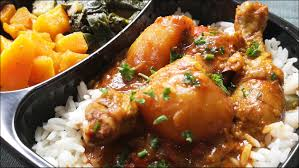

Home
Soso ya Mwamba

Description
It is a traditional Congolese dish that primarily consists of chicken cooked in a rich peanut butter sauce. It is often referred to as “Peanut Butter Chicken” and is a staple in Congolese cuisine. It is a thick, creamy, and savory sauce of flavorful and tender chicken.
Ingredients
- Chicken
- Tomatoes
- Onions
- Peanut butter
- Black peper
- Ginger
- Royco
- Garlic paste
- Nyama choma spice
- salt
- thyme
- All purpose chicken spice
- Cumin
- Dhania
Steps
- Marinate your chicken thighs with black pepper, ginger, royco, nyama choma spice and let it sit for 30minutes
- Fry chicken under medium high heat till it browns and is ready
- Fry your onions till they brown the add ginger garlic paste and fry till fragrant
- Add your spice mix(all purpose chicken spice, cummin, royco cube,dhania) and cook till fragrant
- Add diced tomatoes and fry till ready then add your tomato paste stir cover and simmer to combine spices.
- To half a cup peanut butter add hot water mix till well combined.
- Add the mixture stir cover and cook till oil floats ontop.
- Add a pinch of salt and chicken back into your stew, also add thyme and some water till you achieve your desired thickiness and cover.
- Simmer for 10 minutes under low heat till ready.
Soso ya mwamba is typically served with rice, plantains, or fufu, and is known for its hearty, comforting taste. It is a variation of the popular Moambe chicken, which is also a peanut-based stew common in Central Africa.